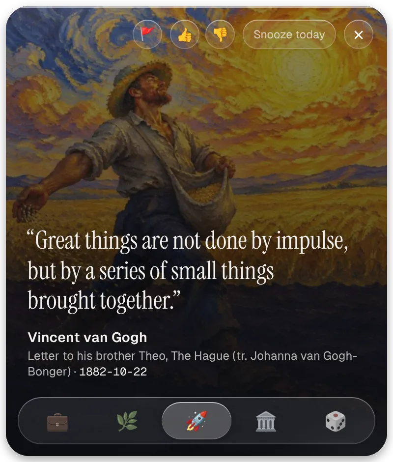

Rally sits quietly in the corner of your screen. When it notices your focus dipping (a string of pauses, slower typing, the afternoon slump) it shows you one motivational quote. Once a day, never more.

Detects when your workday starts and watches the last hour. Repeated pauses count; a long lunch doesn't. Or set your own times instead.
Every one checked word for word against its original source: business, kind words, history, and ancient Greece & Rome.
Runs entirely on your computer, offline. It measures timing only, never what you type.
.dmg and drag Rally into Applications.Rally-…-windows-setup.exe. No admin rights needed.